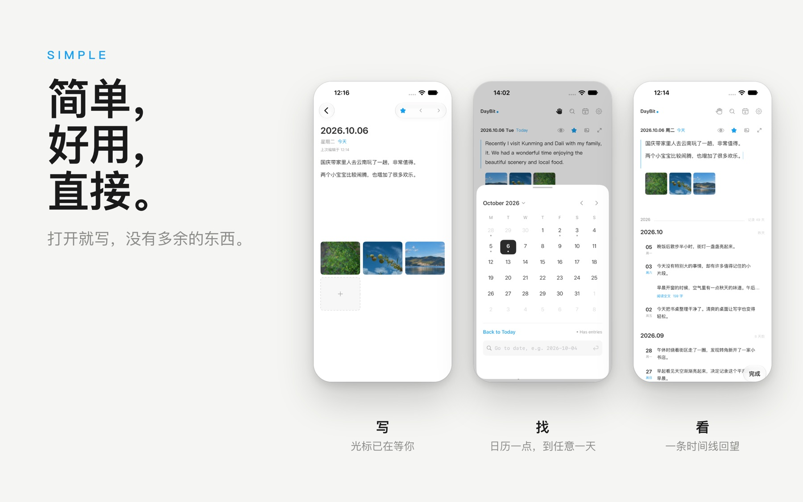
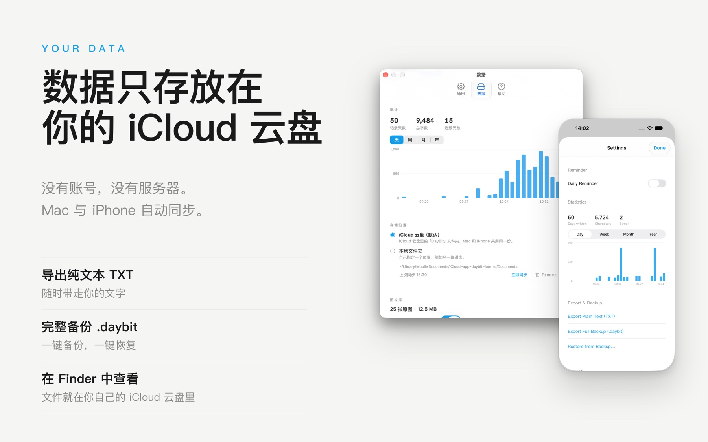
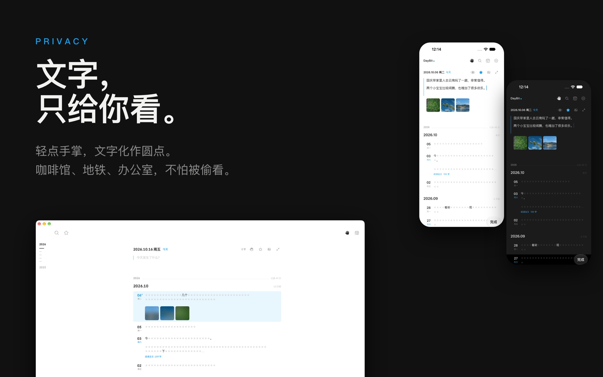
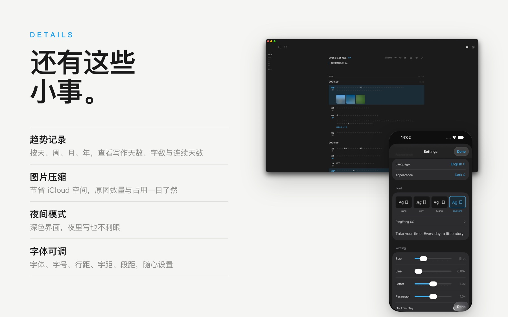
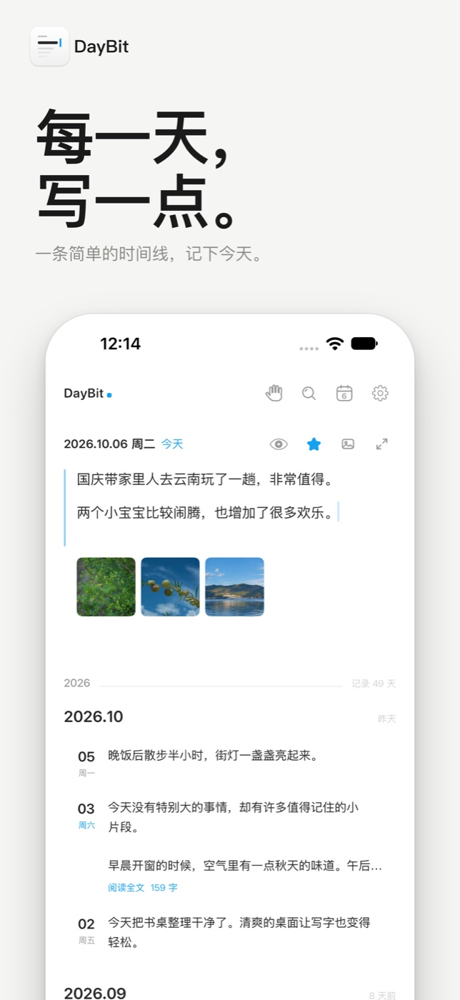
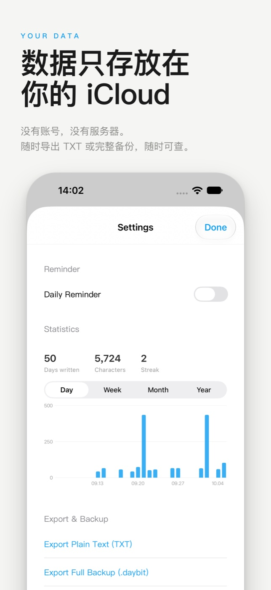
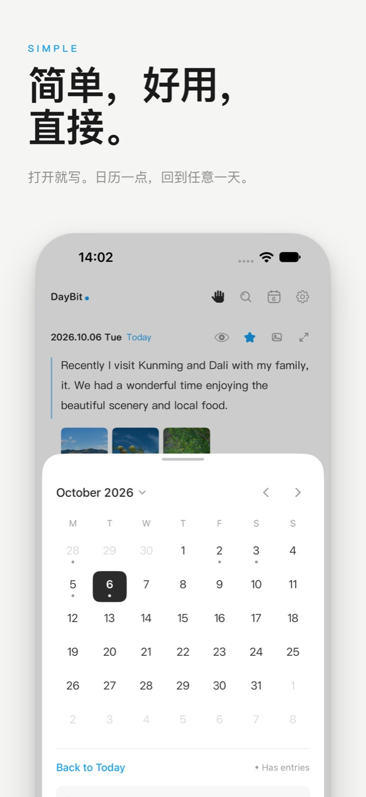
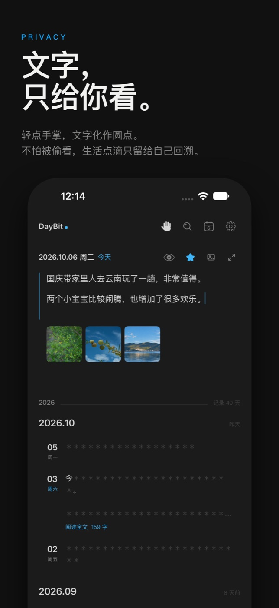
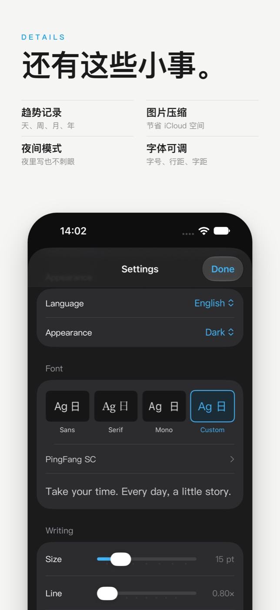

DayBitDaily journal · iPhone & Mac
一条简单的时间线，记下文字与照片，回望生活点滴。数据只存放在你自己的 iCloud 云盘。Every day, a little story. A simple journal whose data stays in your own iCloud Drive.
iPhone 版已上架 App Store · 无需注册账户

页面简单，好用，直接。没有多余的东西，只有今天和过去的每一天。
Open and write. One timeline, nothing in the way.

没有账号，没有服务器。日记与图片都在 iCloud 云盘的 DayBit 文件夹里，Mac 与 iPhone 共用同一份。随时导出 TXT 或完整 .daybit 备份，随时可查。
Your journal lives in your own iCloud Drive. Export plain text or a full backup at any time.

轻点手掌，文字化作圆点。咖啡馆、地铁、办公室，不怕被偷看；需要时再看，回溯生活点滴。
One tap turns your text into dots. Glance-proof journaling in public.

追踪写作趋势，导入图片时压缩以节省空间，支持夜间模式，字体、字号与行距可调。
Writing trends, photo compression, dark mode and adjustable type.
数据只存放在你的 iCloud 云盘，随时导出，可查。
打开就写，日历一点回到任意一天。
一键遮挡文字，避免偷看。
趋势记录、图片压缩、夜间模式、字体可调。
Mac 与 iPhone 共用同一份日记。 The same journal on iPhone.




